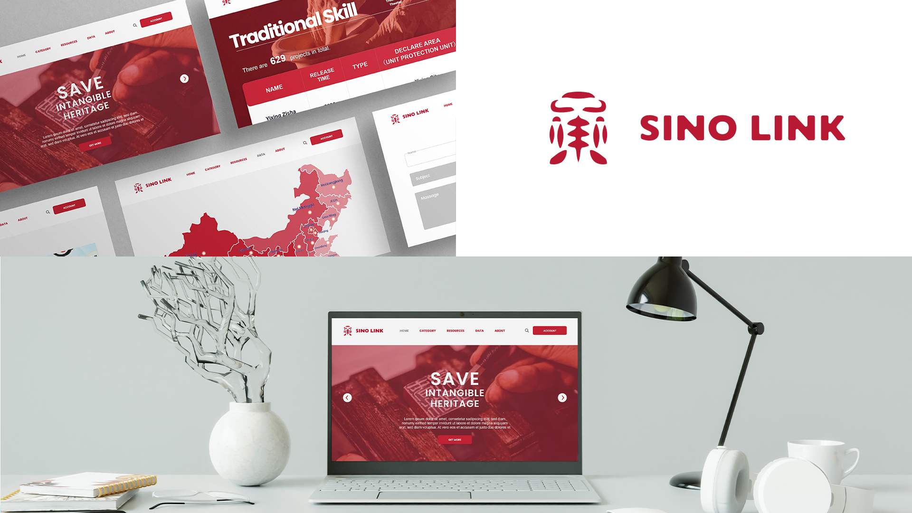

biography
Hello! I'm Jiaying Yuan, I'm going to graduate, majoring in Interface Design and I will have a bachelor's degree in design. I've always been passionate about design and The University of Waikato is the perfect place for me to pursue my dreams.
I used to think that design is a very special profession that requires a lot of natural talent. Later, through designing jewelry, I realised that I was actually interested in design, even had a passion for design and how it works. I knew then that design was what I wanted to do. During my time at Waikato, I learned many necessary skills, gained knowledge and had access to many opportunities that have helped me grow into the person I am today. I found that I was interested in brand, graphic design and application user experience design, video design. Waikato has also helped me pursue my passion for 3D design and now I have started my own jewellery studio.
SINO LINK
China's intangible cultural heritage shows Chinese culture in different ways and from different angles, attracting tourists from all over the world who have a keen interest in Chinese culture. But with the development of science and technology, more and more people are more interested in new things and are forgetting the old things, leading to less and less people interested in non-material cultural heritage and it is declining. Already some aspects of intangible culture inheritance have disappeared due to a lack of new inheritors. Therefore, my partner and I have come up with an idea to let more tourists at home and abroad learn about Chinese culture and the production of China's intangible cultural heritage. We decided to do this through technology-based and data-based communication, creating ‘Sino Link’. This is an APP that provides users with the ability to learn about the history of Intangible cultural heritage by USING VR, purchase goods, or make an appointment to learn and create. The website presents a number of intangible cultural heritage events in different parts of China, allowing people who are interested to find information about them.
Through "SINO LINK", in addition to the APP and Website, we also created a series of posters, promo Items and a Logo to promote Traditional Chinese culture and spread China's intangible cultural heritage around the world. I also made business cards and other ancillary materials to further support our campaign. We will use the power of social media to further support my message. Through Instagram and Facebook, we will promote the voice of "Traditional Chinese culture" and let more people know the essence of China's intangible cultural heritage.
It Breathes

For more information contact us
Email: degreeshow@waikato.ac.nz
Faculty phone: 0800 924 528
Faculty information: cs.waikato.ac.nz